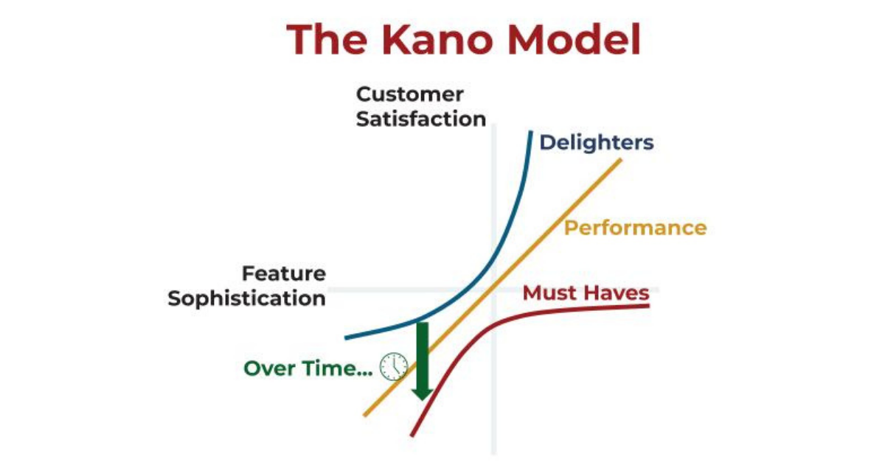
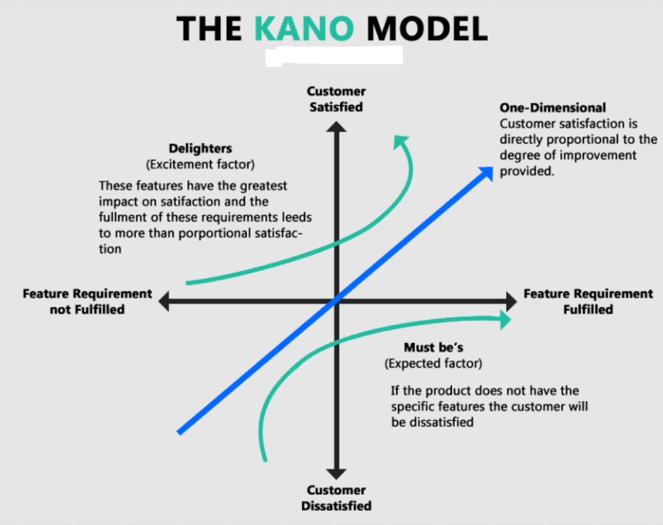

6. Requirement Consolidation (Consolidation and Prioritization)
In every project there are always more requirements than can realistically be implemented within the time and budget. Consolidation means the process of resolving conflicts between stakeholders and determining what will be developed first ("Do the important stuff first").
#Models oriented towards value and customer satisfaction
#KANO Model
The KANO model is an indispensable tool for both the SWA and the Product Owner. It divides system features into 3 (or more) categories based on how they affect customer satisfaction in relation to the degree of their implementation.


Must-be / Basic (Dissatisfiers — Basic factors): Features that the customer takes for granted. Their presence does not impress the customer (satisfaction is neutral), but their absence causes extreme dissatisfaction.
- SWA role: Most architectural properties (99.9% availability, data security, database stability) fall into this category. The customer often forgets to mention them because they assume them. The architect must ensure these fundamentals are included in the architecture and budgeted for.
One-Dimensional / Performance (Satisfiers — Performance factors): A linear relationship applies here: the more/faster/better, the more satisfied the customer.
- Example: Battery life, speed of full-text search, storage capacity.
Attractive / Delighters (Excitement factors): Features the customer did not expect at all. If absent, nobody complains. If present, they produce a "Wow" effect (e.g., automatic report generation using AI).
- SWA role: The architect must ensure the team does not spend months developing "Delighters" at the expense of the stability of "Must-be" features.
#Story Mapping
An agile technique for visually prioritizing and structuring User Stories (for example, in a backlog managed by the Product Owner). High-level requirements are arranged along the horizontal axis and broken down vertically into more detailed tasks listed according to the urgency of implementation
#Simple and classification methods (Ad-hoc)
These techniques are quick, are often used in agile development, and are suitable for smaller sets of requirements:
MoSCoW method and Triage
When building a backlog, requirements are sorted (Triage) into categories:
* **M**ust have: Critical for bringing the product to market (MVP). Without them the system does not function. * **S**hould have: Important, but the product can survive without them (e.g., a temporary manual workaround exists). * **C**ould have: Nice-to-have (Delighters), which will only be done if time and budget remain. * **W**on't have: Will not be done at this stage (Out of scope). They prevent so-called Scope creep (the gradual growth of requirements).Three-level scale (Three-level scale / Single-Criterion Classification): A basic division into high (Mandatory), medium (Optional), and low (Nice-to-have) priority
Rank ordering (Stack ranking): Simply ordering all requirements from the most important at the top (Top 1) to the least important at the bottom. Only one specific requirement can ever be at the top of the list
Top-Ten Technique: Selecting n (for example, 10) of the most important requirements, which are then assigned an exact order of importance
Pairwise comparison: Successively comparing pairs of requirements (or quality attributes) with each other, allowing the most important items to "bubble" to the top. The method is ideal for smaller sets (for example, 12 to 15 quality attributes).
#Analytical methods (Quantitative)
These are used in situations where the interests of multiple stakeholders may conflict and subjectivity needs to be replaced with precise numbers. These methods take more time but provide more objective results.
Wiegers' prioritization matrix (Relative weighting): A tabular approach in which participants rate features (for example, on a scale of 1-9) according to four weighted criteria: relative Benefit, relative Detriment/Penalty if not delivered, Cost, and Risk. The value (Value%) is then calculated mathematically and used to determine the final priority
Criteria matrix: Participants choose specific criteria (such as business value or frequency of use) and assign weights to them (so that they sum to 100). Each candidate is scored. Negative factors (costs, technical risks) are subtracted when calculating the final score
WSJF (Weighted Shortest Job First): A method commonly used in agile frameworks (such as SAFe). It calculates the relative Cost of delay, including value, time criticality, and risk reduction, which is divided by the relative cost / size of the task
AHP (Analytical Hierarchy Process), Cost-Value-Analysis, and QFD (Quality Function Deployment): These are sophisticated analytical models for highly precise engineering structuring
#Recommendations for practice
The sources recommend combining methods. For example, start with a broad categorization using the MoSCoW method or a three-level scale to separate out clearly necessary features, and apply an analytical matrix (Wiegers) or Rank ordering to establish an objective order for disputed requirements that fall, for example, into the "Should have" category. Prioritization should always take place in an interdisciplinary team and with regard to the main business goals.